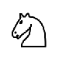
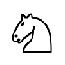

8.6
5 Chess Pictures
| (require chess/pict) | package: chess |
procedure
(chess-board-pict board [ #:settings settings]) → pict? board : chess-board?
settings : chess-display-settings? = default-chess-display-settings
Draws a picture of board, using settings to decide what icons
to use for each piece, what colors to use for squares, etc.
procedure
(chess-piece-pict piece [ #:settings settings]) → pict? piece : colored-chess-piece?
settings : chess-display-settings? = default-chess-display-settings
Draws a picture of piece, using settings to decide what icons
to use.
Examples:
procedure
(chess-square-pict square [ #:settings settings]) → pict? square : (or/c chess-square? occupied-chess-square?)
settings : chess-display-settings? = default-chess-display-settings
Draws a picture of square, including the piece occupying it if
square is an occupied chess square. The color of the square is
based on settings and on what position the square is at, in order to
ensure adjacent squares have different colors.
Examples:
> (chess-square-pict a1) > (chess-square-pict b1) > (chess-square-pict (chess-square-occupy a1 white-rook)) > (chess-square-pict (chess-square-occupy b1 white-knight)) 
5.1 Chess Display Settings
The drawing of chess boards and pieces is controlled by chess display settings. These settings determine what icons to use for pieces, how to draw squares, and various other factors. At present the default settings cannot be changed.
procedure
(chess-display-settings? v) → boolean
v : any/c
A predicate for chess display settings.
The default chess display settings.
Example:
> default-chess-display-settings
(chess-display-settings
#:alternate-cell-pict
#:black-bishop-pict
#:black-king-pict
#:black-knight-pict
#:black-pawn-pict
#:black-queen-pict
#:black-rook-pict
#:cell-pict
#:white-bishop-pict
#:white-king-pict
#:white-knight-pict 
#:white-pawn-pict
#:white-queen-pict
#:white-rook-pict )